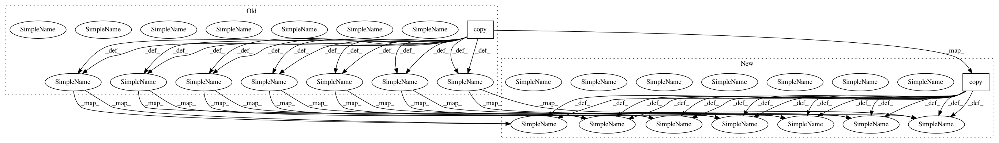

3f36b6c07ecac99da35de25ec0632d99c286f9b4,dipy/denoise/gibbs.py,,_gibbs_removal_1d,#,60
Before Change
if axis:
xs = x.copy()
else:
xs = x.T.copy()
// TV for shift zero (baseline)
tvr, tvl = _image_tv(xs, axis=1, n_points=n_points)
tvp = np.minimum(tvr, tvl)
tvn = tvp.copy()
// Find optimal shift for gibbs removal
isp = xs.copy()
isn = xs.copy()
sp = np.zeros(xs.shape)
sn = np.zeros(xs.shape)
N = xs.shape[1]
c = np.fft.fftshift(np.fft.fft2(xs))
k = np.linspace(-N/2, N/2-1, num=N)
k = (2.0j * np.pi * k) / N
for s in ssamp:
// Access positive shift for given s
img_p = abs(np.fft.ifft2(np.fft.fftshift(c * np.exp(k*s))))
tvsr, tvsl = _image_tv(img_p, axis=1, n_points=n_points)
tvs_p = np.minimum(tvsr, tvsl)
// Access negative shift for given s
img_n = abs(np.fft.ifft2(np.fft.fftshift(c * np.exp(-k*s))))
tvsr, tvsl = _image_tv(img_n, axis=1, n_points=n_points)
tvs_n = np.minimum(tvsr, tvsl)
// Update positive shift params
isp[tvp > tvs_p] = img_p[tvp > tvs_p]
sp[tvp > tvs_p] = s
tvp[tvp > tvs_p] = tvs_p[tvp > tvs_p]
// Update negative shift params
isn[tvn > tvs_n] = img_n[tvn > tvs_n]
sn[tvn > tvs_n] = s
tvn[tvn > tvs_n] = tvs_n[tvn > tvs_n]
// check non-zero sub-voxel shifts
idx = np.nonzero(sp + sn)
// use positive and negative optimal sub-voxel shifts to interpolate to
// original grid points
After Change
ssamp = np.linspace(0.02, 0.9, num=45)
xs = x.copy() if axis else x.T.copy()
// TV for shift zero (baseline)
tvr, tvl = _image_tv(xs, axis=1, n_points=n_points)
tvp = np.minimum(tvr, tvl)
tvn = tvp.copy()
// Find optimal shift for gibbs removal
isp = xs.copy()
isn = xs.copy()
sp = np.zeros(xs.shape)
sn = np.zeros(xs.shape)
N = xs.shape[1]
c = np.fft.fftshift(np.fft.fft2(xs))
k = np.linspace(-N/2, N/2-1, num=N)
k = (2.0j * np.pi * k) / N
for s in ssamp:
// Access positive shift for given s
img_p = abs(np.fft.ifft2(np.fft.fftshift(c * np.exp(k*s))))
tvsr, tvsl = _image_tv(img_p, axis=1, n_points=n_points)
tvs_p = np.minimum(tvsr, tvsl)
// Access negative shift for given s
img_n = abs(np.fft.ifft2(np.fft.fftshift(c * np.exp(-k*s))))
tvsr, tvsl = _image_tv(img_n, axis=1, n_points=n_points)
tvs_n = np.minimum(tvsr, tvsl)
// Update positive shift params
isp[tvp > tvs_p] = img_p[tvp > tvs_p]
sp[tvp > tvs_p] = s
tvp[tvp > tvs_p] = tvs_p[tvp > tvs_p]
// Update negative shift params
isn[tvn > tvs_n] = img_n[tvn > tvs_n]
sn[tvn > tvs_n] = s
tvn[tvn > tvs_n] = tvs_n[tvn > tvs_n]
// check non-zero sub-voxel shifts
idx = np.nonzero(sp + sn)
// use positive and negative optimal sub-voxel shifts to interpolate to
// original grid points
In pattern: SUPERPATTERN
Frequency: 4
Non-data size: 2
Instances
Project Name: nipy/dipy
Commit Name: 3f36b6c07ecac99da35de25ec0632d99c286f9b4
Time: 2019-07-15
Author: rafaelnh21@gmail.com
File Name: dipy/denoise/gibbs.py
Class Name:
Method Name: _gibbs_removal_1d
Project Name: modAL-python/modAL
Commit Name: 7d911ceb43845a72edf84b502fa948c68792e517
Time: 2018-08-12
Author: dannyofig@gmail.com
File Name: modAL/batch.py
Class Name:
Method Name: ranked_batch
Project Name: modAL-python/modAL
Commit Name: 8a21bc14380cd31d7b514701cf3fc5829f27f3f4
Time: 2018-08-13
Author: theodore.danka@gmail.com
File Name: modAL/batch.py
Class Name:
Method Name: ranked_batch